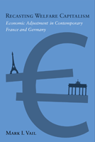

Compares and contrasts the development of welfare capitalism in France and Germany, through good times and bad, since the 1970s
Compares and contrasts the development of welfare capitalism in France and Germany, through good times and bad, since the 1970s


 Compares and contrasts the development of welfare capitalism in France and Germany, through good times and bad, since the 1970s
Compares and contrasts the development of welfare capitalism in France and Germany, through good times and bad, since the 1970s

|  |
Recasting Welfare CapitalismEconomic Adjustment in Contemporary France and GermanyMark I. Vailcloth EAN: 978-1-59213-967-5 (ISBN: 1-59213-967-1) |
"This is an important and extremely well written book. Vail challenges the dominant theoretical approaches within comparative political economy. Recasting Welfare Capitalism is a comprehensive account, well researched, and exceptionally clear. It will reshape academic discussions of welfare state change."
—Chris Howell, Department of Politics, Oberlin College
Recasting Welfare Capitalism, employs a sophisticated and original theoretical approach to compare welfare states and political-economic adjustment in Germany and France. Mark Vail examines how and why institutional change takes place and what factors characterize economic evolution when moving from times of prosperity to more austere periods and back again. These respective evolutions involve interrelated changes in social and economic policies and are characterized by political relationships that are continuously renegotiated�often in unpredictable ways.
Covering the 1970s to the present, Vail analyzes social and economic reforms, including labor-policy, social-insurance, and antipoverty programs. He focuses on the tactics and actions of key political players and demolishes the stagnation argument that suggests that France and Germany have largely frozen political economies incapable of reform. The result is a compelling reconceptualization of change in both the welfare state and the broader political economy during an age of globalization.
Excerpt available at www.temple.edu/tempress
"Recasting Welfare Capitalism presents very illuminating and detailed analysis of contemporary political and economic adjustment strategies in Germany and France. In so doing, it debunks the widely shared perception that these countries have been moribund and plagued by political stalemate. Vail's insights stem from a creative theoretical shift away from contemporary institutionalism in political economic analysis to an emphasis on informal relational dynamics and ideas. His persuasive argument about the emergence of new relations and dynamics is grounded in elegant and historically informed case studies of crucial policy and relational realms."
—Gary Herrigel, Department of Political Science, University of Chicago
"Mark Vail�s Recasting Welfare Capitalism shows how French and German political actors navigated the difficult and contentious transitions from rapid postwar economic growth to the slower growth of the past three decades. By linking the usual welfare-state analytic categories to broader economic management issues, he highlights how actors and their ideas mattered for the gradual transformation of both sides of the welfare-capitalism model in France and Germany. This is one of the rare studies offering a comprehensive and insightful analysis of structures, actors, and policy changes across the whole postwar era."
—Herman Schwartz, Department of Politics, University of Virginia
"Vail (Tulane Univ.) challenges prevalent theories purporting to explain the four-decade-old transformation of welfare states in his analysis of the effects of liberalization and austerity on welfare capitalism.... Readers both inside and outside the box will be captivated by this seminal contribution to the literature on the development of varieties of welfare capitalism. Summing Up: Highly recommended."
—CHOICE
"A timely comparative analysis of social and economic policy in Germany and France since the 1970s....Recasting Welfare Capitalism makes important empirical and theoretical contributions to the literature on recent patterns of reform of developed welfare capitalist political economies. His comprehensive, detailed analyses of the social politics of economic adjustment in France and Germany since the Second World War effectively challenge the widely discussed convergence and the �national capitalisms� hypotheses, and present an innovative synthesis and extension of institutional change and regulation theoretical perspectives. This study will be of great interest not only to students of the political economies of France and Germany, but also to political scientists and sociologists with a broader interest in the recent developments and possible futures of European welfare capitalism."
—The International Journal of Comparative Sociology
"Mark Vail's new book provides an extraordinary tour de force of economic and social policy reform in Germany and France from the post-war period until the present....[His] analysis provides relevant new evidence for all major ongoing debates in the comparative political economy of Western Europe."
—French Politics
"Recasting Welfare Capitalism...captures the transformation of national models of welfare capitalism in Germany and France as they shift from a climate of prosperity to periods of economic austerity. This relevant book carefully walks us through four decades of gradual change by laying out different stages in the creation, expansion, and reforms of French and German welfare states and models of capitalism.... The contributions of Recasting Welfare Capitalism will be echoed in the years to come...Vail encourages us to revisit and update traditional models of welfare capitalism and of labor market governance."
—Comparative Political Studies
"[A] thorough summary of recent welfare reform efforts in France and Germany. Mark Vail has three important points to make...[he] is best on the details of the reforms...[and] also excellent on the surprising politics behind these reforms.... Vail's work is a solid and workmanlike investigation into an important issue.... The book is a must-read for any graduate student working on the French or German welfare state, or on French and German political economy more broadly."
—The Journal of Social Policy
"[Vail] convincingly makes the case for the importance of key linkages between the political economy and welfare regimes.... One of the most important contributions of this book is found in its highly detailed analysis of income policy. The reader gains real insight...Vail does an excellent job of binding welfare policy into the broader context of the changing character of modern capitalist systems....This is an important study, which researchers and students of comparative European welfare systems will discover to be essential reading."
—Political Science Quarterly
"The attention Vail pays to the political constraints and limitations, and the influence of different administrations on economic and welfare reform is persuasive.... Vail convincingly demonstrates that it would be a mistake to succumb to the conventional wisdom about each country�s version of the welfare state.... Vail�s framework for conceptualizing change in welfare states gives us a new and valuable tool for analysis. Those interested in comparisons of the welfare states beyond regime types will welcome Vail�s efforts in recalibrating the conversation."
—Enterprise and Society
"[Vail] covers a [broad] spectrum of welfare-state policies, including social insurance, antipoverty programs, and labor market policy.... One of Vail's most interesting conclusions is that in order to be able to change and adapt, the traditionally 'dirigiste' French state has had to engage to a great degree in negotiations with interest groups, while the traditionally more consensual and neocorporatist German state has had to become more conflict oriented."
—Perspectives on Politics
Also available in e-book
List of Tables
Preface
Abbreviations
Introduction: Recasting Welfare Capitalism in an Age of Austerity
1. The Politics of Austerity in Advanced Industrial Democracies
2. The Rise and Fall of the Postwar Golden Age and the Development of French and German Welfare Capitalism
3. Recasting France�s Political-Economic Order: The Demise of Dirigisme and the Turn to the Market
4. German Reunifi cation and the Economic and Social Incorporation of Eastern Germany
5. Modernizing the French and German Labor Markets in an Age of Austerity
6. The Shifting Politics of French and German Social-Insurance Reform
7. New Social Rights in France and Germany
Conclusion: French and German Welfare-Capitalist Adjustment in Historical and Comparative Perspective
Notes
Index
 | Mark I. Vail is Assistant Professor in the Department of Political Science at Tulane University. He is a contributor to The State after Statism, edited by Jonah D. Levy, and has published work in Comparative Politics, The Journal of European Political Research, and West European Politics, among other venues. |
Political Science and Public Policy
Business/Economics
Sociology
© 2015 Temple University. All Rights Reserved. This page: http://www.temple.edu/tempress/titles/2011_reg.html.